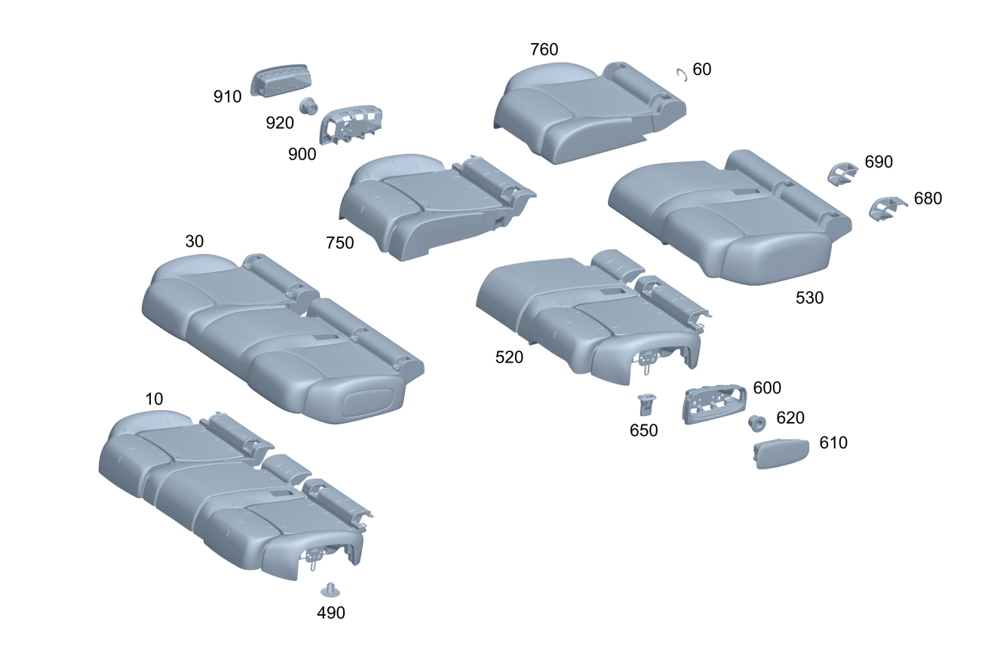

| № | Артикул | Название | Кол. | Примечание | Ограничение |
|---|---|---|---|---|---|
| 10 | A 243 920 27 01 | Накладка подушки сиденья (PADDING, RR SEAT CUSHION) | 1 | 7U2/7U4 | |
| 10 | A 243 920 28 01 | Накладка подушки сиденья (PADDING, RR SEAT CUSHION) | 1 | (7U2/7U4)+293 | |
| 10 | A 247 920 50 03 | Накладка подушки сиденья (PADDING, RR SEAT CUSHION) | 1 | (7U2/7U4)+700 | |
| 10 | A 247 920 51 03 | Накладка подушки сиденья (PADDING, RR SEAT CUSHION) | 1 | (7U2/7U4)+293+700 | |
| 10 | A 247 920 48 07 | Накладка подушки сиденья (PADDING, RR SEAT CUSHION) | 1 | Рулевое управление: Влево | (7U2/7U4)+700+(802+052/803/804) |
| 10 | A 247 920 48 07 | Накладка подушки сиденья (PADDING, RR SEAT CUSHION) | 1 | Рулевое управление: Влево | (7U2/7U4)+700 |
| 30 | A 247 920 38 04 | Обивка подушки сиденья (OUTER COVER, RR SEAT CUSH) | 1 | Нижняя часть | 7U2+100A |
| 30 | A 247 920 38 04 | Обивка подушки сиденья (OUTER COVER, RR SEAT CUSH) | 1 | Нижняя часть | 7U2+100A |
| 30 | A 247 920 43 04 | Обивка подушки сиденья (OUTER COVER, RR SEAT CUSH) | 1 | Нижняя часть | 7U2+100A+293 |
| 30 | A 247 920 43 04 | Обивка подушки сиденья (OUTER COVER, RR SEAT CUSH) | 1 | Нижняя часть | 7U2+100A+293 |
| 30 | A 243 920 71 00 | Обивка подушки сиденья (OUTER COVER, RR SEAT CUSH) | 1 | Нижняя часть | 7U2+220A |
| 30 | A 243 920 71 00 | Обивка подушки сиденья (OUTER COVER, RR SEAT CUSH) | 1 | Нижняя часть | 7U2+220A |
| 30 | A 243 920 72 00 | Обивка подушки сиденья (OUTER COVER, RR SEAT CUSH) | 1 | Нижняя часть | 7U2+220A+293 |
| 30 | A 243 920 72 00 | Обивка подушки сиденья (OUTER COVER, RR SEAT CUSH) | 1 | Нижняя часть | 7U2+220A+293 |
| 30 | A 247 920 66 06 | Обивка подушки сиденья (OUTER COVER, RR SEAT CUSH) | 1 | Нижняя часть | 7U2+320A |
| 30 | A 247 920 65 07 | Обивка подушки сиденья | 1 | Нижняя часть | 7U2+310A+(803+053/804/805) |
| 30 | A 247 920 65 07 | Обивка подушки сиденья | 1 | Нижняя часть | 7U2+310A+(803+053/804/805) |
| 30 | A 247 920 65 07 | Обивка подушки сиденья | 1 | Нижняя часть | 7U2+310A |
| 30 | A 247 920 85 08 | Обивка подушки сиденья | 1 | Нижняя часть | 7U2+310A+(804+054/805) |
| 30 | A 247 920 85 08 | Обивка подушки сиденья | 1 | Нижняя часть | 7U2+310A |
| 30 | A 247 920 31 07 | Обивка подушки сиденья | 1 | Нижняя часть | 7U2+320A+293 |
| 30 | A 247 920 31 07 | Обивка подушки сиденья | 1 | Нижняя часть | 7U2+320A+293 |
| 30 | A 247 920 66 07 | Обивка подушки сиденья | 1 | Нижняя часть | 7U2+310A+293+(803+053/804/805) |
| 30 | A 247 920 66 07 | Обивка подушки сиденья | 1 | Нижняя часть | 7U2+310A+293+(803+053/804/805) |
| 30 | A 247 920 66 07 | Обивка подушки сиденья | 1 | Нижняя часть | 7U2+310A+293 |
| 30 | A 247 920 86 08 | Обивка подушки сиденья | 1 | Нижняя часть | 7U2+310A+293+(804+054/805) |
| 30 | A 247 920 86 08 | Обивка подушки сиденья | 1 | Нижняя часть | 7U2+310A+293 |
| 30 | A 243 920 61 00 | Обивка подушки сиденья (OUTER COVER, RR SEAT CUSH) | 1 | Нижняя часть | 7U2+340A |
| 30 | A 243 920 61 00 | Обивка подушки сиденья (OUTER COVER, RR SEAT CUSH) | 1 | Нижняя часть | 7U2+340A |
| 30 | A 243 920 62 00 | Обивка подушки сиденья (OUTER COVER, RR SEAT CUSH) | 1 | Нижняя часть | 7U2+340A+293 |
| 30 | A 243 920 62 00 | Обивка подушки сиденья (OUTER COVER, RR SEAT CUSH) | 1 | Нижняя часть | 7U2+340A+293 |
| 30 | A 247 920 56 07 | Обивка подушки сиденья (OUTER COVER, RR SEAT CUSH) | 1 | Нижняя часть Рулевое управление: Влево | 7U2+100A+700+(802+052/803/804) |
| 30 | A 247 920 56 07 | Обивка подушки сиденья (OUTER COVER, RR SEAT CUSH) | 1 | Нижняя часть Рулевое управление: Влево | 7U2+100A+700 |
| 30 | A 247 920 48 04 | Обивка подушки сиденья (OUTER COVER, RR SEAT CUSH) | 1 | Нижняя часть | 7U4+200A |
| 30 | A 247 920 48 04 | Обивка подушки сиденья (OUTER COVER, RR SEAT CUSH) | 1 | Нижняя часть | 7U4+200A |
| 30 | A 247 920 80 08 | Обивка подушки сиденья | 1 | Нижняя часть | 7U4+200A+(804+054/805) |
| 30 | A 247 920 80 08 | Обивка подушки сиденья | 1 | Нижняя часть | 7U4+200A |
| 30 | A 247 920 51 04 | Обивка подушки сиденья (OUTER COVER, RR SEAT CUSH) | 1 | Нижняя часть | 7U4+200A+293 |
| 30 | A 247 920 51 04 | Обивка подушки сиденья (OUTER COVER, RR SEAT CUSH) | 1 | Нижняя часть | 7U4+200A+293 |
| 30 | A 247 920 83 08 | Обивка подушки сиденья | 1 | Нижняя часть | 7U4+200A+293+(804+054/805) |
| 30 | A 247 920 83 08 | Обивка подушки сиденья | 1 | Нижняя часть | 7U4+200A+293 |
| 30 | A 247 920 46 04 | Обивка подушки сиденья (OUTER COVER, RR SEAT CUSH) | 1 | Нижняя часть | 7U4+650A |
| 30 | A 247 920 46 04 | Обивка подушки сиденья (OUTER COVER, RR SEAT CUSH) | 1 | Нижняя часть | 7U4+650A |
| 30 | A 247 920 26 08 | Обивка подушки сиденья | 1 | Нижняя часть | 7U4+650A+(804+054/805) |
| 30 | A 247 920 26 08 | Обивка подушки сиденья | 1 | Нижняя часть | 7U4+650A |
| 30 | A 247 920 49 04 | Обивка подушки сиденья (OUTER COVER, RR SEAT CUSH) | 1 | Нижняя часть | 7U4+650A+293 |
| 30 | A 247 920 49 04 | Обивка подушки сиденья (OUTER COVER, RR SEAT CUSH) | 1 | Нижняя часть | 7U4+650A+293 |
| 30 | A 247 920 25 08 | Обивка подушки сиденья | 1 | Нижняя часть | 7U4+650A+293+(804+054/805) |
| 30 | A 247 920 25 08 | Обивка подушки сиденья | 1 | Нижняя часть | 7U4+650A+293 |
| 30 | A 247 920 47 04 | Обивка подушки сиденья (OUTER COVER, RR SEAT CUSH) | 1 | Нижняя часть | 7U4+150A+(803+053/804/805) |
| 30 | A 247 920 50 04 | Обивка подушки сиденья (OUTER COVER, RR SEAT CUSH) | 1 | Нижняя часть | 7U4+150A+293+(803+053/804/805) |
| 60 | A 463 984 00 61 | Крепежная скоба (FASTENING CLIP) | 66 | ||
| 490 | A 000 991 41 02 | Фиксатор вставной (PLUG-IN FASTENER) | 6 | Крепление обивки | |
| 520 | A 247 920 17 01 | Накладка подушки сиденья (PADDING, RR SEAT CUSHION) | 1 | Слева | (7U2/7U4)+(567/847)+293+700 |
| 520 | A 247 920 75 03 | Накладка подушки сиденья (PADDING, RR SEAT CUSHION) | 1 | Слева | (7U2/7U4)+(567/847)+700 |
| 520 | A 243 920 29 01 | Накладка подушки сиденья (PADDING, RR SEAT CUSHION) | 1 | Слева | (7U2/7U4) |
| 520 | A 243 920 31 01 | Накладка подушки сиденья (PADDING, RR SEAT CUSHION) | 1 | Слева | (7U2/7U4)+293 |
| 530 | A 247 920 03 05 | Обивка подушки сиденья (OUTER COVER, RR SEAT CUSH) | 1 | Слева | 7U2+100A+(567/847) |
| 530 | A 247 920 03 05 | Обивка подушки сиденья (OUTER COVER, RR SEAT CUSH) | 1 | Слева | 7U2+100A+(567/847)+700 |
| 530 | A 247 920 47 05 | Обивка подушки сиденья (OUTER COVER, RR SEAT CUSH) | 1 | Слева | 7U2+100A+293+(567/847) |
| 530 | A 247 920 47 05 | Обивка подушки сиденья (OUTER COVER, RR SEAT CUSH) | 1 | Слева | 7U2+100A+293+(567/847)+700 |
| 530 | A 243 920 75 00 | Обивка подушки сиденья (OUTER COVER, RR SEAT CUSH) | 1 | Слева | 7U2+220A+(567/847) |
| 530 | A 243 920 77 00 | Обивка подушки сиденья (OUTER COVER, RR SEAT CUSH) | 1 | Слева | 7U2+220A+293+(567/847) |
| 530 | A 247 920 75 06 | Обивка подушки сиденья (OUTER COVER, RR SEAT CUSH) | 1 | Слева | 7U2+320A+(567/847) |
| 530 | A 247 920 71 07 | Обивка подушки сиденья | 1 | Слева | 7U2+310A+(567/847)+(803+053/804/805) |
| 530 | A 247 920 33 07 | Обивка подушки сиденья | 1 | Слева | 7U2+320A+293+(567/847) |
| 530 | A 247 920 73 07 | Обивка подушки сиденья | 1 | Слева | 7U2+310A+293+(567/847)+(803+053/804/805) |
| 530 | A 243 920 67 00 | Обивка подушки сиденья (OUTER COVER, RR SEAT CUSH) | 1 | Слева | 7U2+340A+(567/847) |
| 530 | A 243 920 69 00 | Обивка подушки сиденья (OUTER COVER, RR SEAT CUSH) | 1 | Слева | 7U2+340A+293+(567/847) |
| 530 | A 243 920 99 00 | Обивка подушки сиденья (OUTER COVER, RR SEAT CUSH) | 1 | Слева | 7U2+600A+847+700 |
| 530 | A 243 920 00 01 | Обивка подушки сиденья (OUTER COVER, RR SEAT CUSH) | 1 | Слева | 7U2+600A+293+847+700 |
| 530 | A 247 920 47 05 | Обивка подушки сиденья (OUTER COVER, RR SEAT CUSH) | 1 | Слева | 7U2+100A+293 |
| 530 | A 247 920 51 08 | Обивка подушки сиденья (OUTER COVER, RR SEAT CUSH) | 1 | Слева | 7U2+100A+101A+293+(804+054/805) |
| 530 | A 247 920 51 08 | Обивка подушки сиденья (OUTER COVER, RR SEAT CUSH) | 1 | Слева | 7U2+100A+101A+293 |
| 530 | A 247 920 33 07 | Обивка подушки сиденья | 1 | Слева | 7U2+320A+293 |
| 530 | A 247 920 03 05 | Обивка подушки сиденья (OUTER COVER, RR SEAT CUSH) | 1 | Слева | 7U2+100A |
| 530 | A 243 920 12 02 | Обивка подушки сиденья (OUTER COVER, RR SEAT CUSH) | 1 | Слева | 7U2+100A+101A+(804+054/805) |
| 530 | A 243 920 12 02 | Обивка подушки сиденья (OUTER COVER, RR SEAT CUSH) | 1 | Слева | 7U2+100A+101A |
| 530 | A 247 920 71 07 | Обивка подушки сиденья | 1 | Слева | 7U2+310A+(803+053/804/805) |
| 530 | A 247 920 71 07 | Обивка подушки сиденья | 1 | Слева | 7U2+310A |
| 530 | A 247 920 47 08 | Обивка подушки сиденья | 1 | Слева | 7U2+310A+(804+054/805) |
| 530 | A 247 920 47 08 | Обивка подушки сиденья | 1 | Слева | 7U2+310A |
| 530 | A 247 920 75 06 | Обивка подушки сиденья (OUTER COVER, RR SEAT CUSH) | 1 | Слева | 7U2+320A |
| 530 | A 247 920 73 07 | Обивка подушки сиденья | 1 | Слева | 7U2+310A+293+(803+053/804/805) |
| 530 | A 247 920 73 07 | Обивка подушки сиденья | 1 | Слева | 7U2+310A+293 |
| 530 | A 247 920 49 08 | Обивка подушки сиденья | 1 | Слева | 7U2+310A+293+(804+054/805) |
| 530 | A 247 920 49 08 | Обивка подушки сиденья | 1 | Слева | 7U2+310A+293 |
| 530 | A 243 920 75 00 | Обивка подушки сиденья (OUTER COVER, RR SEAT CUSH) | 1 | Слева | 7U2+220A |
| 530 | A 243 920 69 00 | Обивка подушки сиденья (OUTER COVER, RR SEAT CUSH) | 1 | Слева | 7U2+340A+293 |
| 530 | A 243 920 67 00 | Обивка подушки сиденья (OUTER COVER, RR SEAT CUSH) | 1 | Слева | 7U2+340A |
| 530 | A 243 920 77 00 | Обивка подушки сиденья (OUTER COVER, RR SEAT CUSH) | 1 | Слева | 7U2+220A+293 |
| 530 | A 247 920 11 04 | Обивка подушки сиденья (OUTER COVER, RR SEAT CUSH) | 1 | Слева | 7U4+200A+(567/847) |
| 530 | A 247 920 03 04 | Обивка подушки сиденья (OUTER COVER, RR SEAT CUSH) | 1 | Слева | 7U4+200A+293+(567/847) |
| 530 | A 247 920 07 04 | Обивка подушки сиденья (OUTER COVER, RR SEAT CUSH) | 1 | Слева | 7U4+650A+(567/847) |
| 530 | A 247 920 97 03 | Обивка подушки сиденья (OUTER COVER, RR SEAT CUSH) | 1 | Слева | 7U4+650A+293+(567/847) |
| 530 | A 247 920 09 04 | Обивка подушки сиденья (OUTER COVER, RR SEAT CUSH) | 1 | Слева | 7U4+150A+(567/847)+(803+053/804/805) |
| 530 | A 247 920 01 04 | Обивка подушки сиденья (OUTER COVER, RR SEAT CUSH) | 1 | Слева | 7U4+150A+293+(567/847)+(803+053/804/805) |
| 530 | A 247 920 01 04 | Обивка подушки сиденья (OUTER COVER, RR SEAT CUSH) | 1 | Слева | 7U4+150A+293+(803+053/804/805) |
| 530 | A 247 920 01 04 | Обивка подушки сиденья (OUTER COVER, RR SEAT CUSH) | 1 | Слева | 7U4+150A+293 |
| 530 | A 247 920 97 03 | Обивка подушки сиденья (OUTER COVER, RR SEAT CUSH) | 1 | Слева | 7U4+650A+293 |
| 530 | A 247 920 33 08 | Обивка подушки сиденья (OUTER COVER, RR SEAT CUSH) | 1 | Слева | 7U4+650A+293+(804+054/805) |
| 530 | A 247 920 33 08 | Обивка подушки сиденья (OUTER COVER, RR SEAT CUSH) | 1 | Слева | 7U4+650A+293 |
| 530 | A 247 920 11 04 | Обивка подушки сиденья (OUTER COVER, RR SEAT CUSH) | 1 | Слева | 7U4+200A |
| 530 | A 247 920 61 08 | Обивка подушки сиденья (OUTER COVER, RR SEAT CUSH) | 1 | Слева | 7U4+200A+(804+054/805) |
| 530 | A 247 920 61 08 | Обивка подушки сиденья (OUTER COVER, RR SEAT CUSH) | 1 | Слева | 7U4+200A |
| 530 | A 247 920 07 04 | Обивка подушки сиденья (OUTER COVER, RR SEAT CUSH) | 1 | Слева | 7U4+650A |
| 530 | A 247 920 31 08 | Обивка подушки сиденья (OUTER COVER, RR SEAT CUSH) | 1 | Слева | 7U4+650A+(804+054/805) |
| 530 | A 247 920 31 08 | Обивка подушки сиденья (OUTER COVER, RR SEAT CUSH) | 1 | Слева | 7U4+650A |
| 530 | A 247 920 09 04 | Обивка подушки сиденья (OUTER COVER, RR SEAT CUSH) | 1 | Слева | 7U4+150A+(803+053/804/805) |
| 530 | A 247 920 09 04 | Обивка подушки сиденья (OUTER COVER, RR SEAT CUSH) | 1 | Слева | 7U4+150A |
| 530 | A 247 920 03 04 | Обивка подушки сиденья (OUTER COVER, RR SEAT CUSH) | 1 | Слева | 7U4+200A+293 |
| 530 | A 243 920 10 02 | Обивка подушки сиденья (OUTER COVER, RR SEAT CUSH) | 1 | Слева | 7U4+200A+293+(804+054/805) |
| 530 | A 243 920 10 02 | Обивка подушки сиденья (OUTER COVER, RR SEAT CUSH) | 1 | Слева | 7U4+200A+293 |
| 600 | A 247 923 15 00 | Сегмент рамы (FRAME SEGMENT) | 1 | Слева | 293 |
| 600 | A 247 923 29 00 | Сегмент рамы (FRAME SEGMENT) | 1 | Слева | 293 |
| 600 | A 247 923 15 00 | Сегмент рамы (FRAME SEGMENT) | 1 | Слева | 293+(567/847) |
| 600 | A 247 923 29 00 | Сегмент рамы (FRAME SEGMENT) | 1 | Слева | 293+(567/847) |
| 610 | A 177 860 19 02 | Боковая НПБ (SIDEBAG) | 1 | Слева | 293 |
| 610 | A 177 860 19 02 | Боковая НПБ (SIDEBAG) | 1 | Слева | 293+(567/847) |
| 620 | N 000000 008272 | Гайка (NUT) | 2 | Слева; M6 | 293 |
| 620 | N 000000 008272 | Гайка (NUT) | 2 | Крепление левой боковой подушки безопасности; M6 | 293+(567/847) |
| 620 | N 000000 008272 | Гайка (NUT) | 2 | Крепление левой боковой подушки безопасности; M6 | 293+(567/847) |
| 650 | A 177 923 14 00 | Держатель (HOLDER) | 3 | Сбоку спереди | |
| 650 | A 177 923 14 00 | Держатель (HOLDER) | 2 | Слева и справа | |
| 680 | A 247 860 83 02 | Накладка креп. дет.кресла (COVER, CHILD SEAT ANCHOR) | 1 | Левое сиденье, слева снаружи | |
| 680 | A 247 860 85 02 | Накладка креп. дет.кресла (COVER, CHILD SEAT ANCHOR) | 1 | Левое сиденье, слева снаружи | 8U8 |
| 680 | A 247 860 84 02 | Накладка креп. дет.кресла (COVER, CHILD SEAT ANCHOR) | 1 | Правое сиденье, справа снаружи | |
| 680 | A 247 860 86 02 | Накладка креп. дет.кресла (COVER, CHILD SEAT ANCHOR) | 1 | Правое сиденье, справа снаружи | 8U8 |
| 680 | A 247 860 83 02 | Накладка креп. дет.кресла (COVER, CHILD SEAT ANCHOR) | 1 | Левое сиденье, слева снаружи | 567/847 |
| 680 | A 247 860 85 02 | Накладка креп. дет.кресла (COVER, CHILD SEAT ANCHOR) | 1 | Левое сиденье, слева снаружи | (567/847)+8U8 |
| 680 | A 247 860 84 02 | Накладка креп. дет.кресла (COVER, CHILD SEAT ANCHOR) | 1 | Правое сиденье, справа снаружи | 567/847 |
| 680 | A 247 860 86 02 | Накладка креп. дет.кресла (COVER, CHILD SEAT ANCHOR) | 1 | Правое сиденье, справа снаружи | (567/847)+8U8 |
| 690 | A 247 920 35 04 | Подушка сиденья (SEAT CUSHION) | 1 | Сиденье слева, изнутри | |
| 690 | A 247 920 36 04 | Подушка сиденья (SEAT CUSHION) | 1 | Сиденье слева, изнутри | 8U8 |
| 690 | A 247 920 35 04 | Подушка сиденья (SEAT CUSHION) | 1 | Сиденье справа, изнутри | |
| 690 | A 247 920 36 04 | Подушка сиденья (SEAT CUSHION) | 1 | Сиденье справа, изнутри | 8U8 |
| 690 | A 247 920 35 04 | Подушка сиденья (SEAT CUSHION) | 1 | Сиденье слева, изнутри | 567/847 |
| 690 | A 247 920 36 04 | Подушка сиденья (SEAT CUSHION) | 1 | Сиденье слева, изнутри | (567/847)+8U8 |
| 690 | A 247 920 35 04 | Подушка сиденья (SEAT CUSHION) | 1 | Сиденье справа, изнутри | 567/847 |
| 690 | A 247 920 36 04 | Подушка сиденья (SEAT CUSHION) | 1 | Сиденье справа, изнутри | (567/847)+8U8 |
| 750 | A 247 920 18 01 | Накладка подушки сиденья (PADDING, RR SEAT CUSHION) | 1 | Слева | (7U2/7U4)+(567/847)+293+700 |
| 750 | A 247 920 76 03 | Накладка подушки сиденья (PADDING, RR SEAT CUSHION) | 1 | Слева | (7U2/7U4)+(567/847)+700 |
| 750 | A 243 920 30 01 | Накладка подушки сиденья (PADDING, RR SEAT CUSHION) | 1 | Слева | (7U2/7U4) |
| 750 | A 243 920 32 01 | Накладка подушки сиденья (PADDING, RR SEAT CUSHION) | 1 | Слева | (7U2/7U4)+293 |
| 760 | A 247 920 04 05 | Обивка подушки сиденья (OUTER COVER, RR SEAT CUSH) | 1 | Справа | 7U2+100A+(567/847) |
| 760 | A 247 920 04 05 | Обивка подушки сиденья (OUTER COVER, RR SEAT CUSH) | 1 | Справа | 7U2+100A+(567/847)+700 |
| 760 | A 247 920 48 05 | Обивка подушки сиденья (OUTER COVER, RR SEAT CUSH) | 1 | Справа | 7U2+100A+293+(567/847) |
| 760 | A 247 920 48 05 | Обивка подушки сиденья (OUTER COVER, RR SEAT CUSH) | 1 | Справа | 7U2+100A+293+(567/847)+700 |
| 760 | A 243 920 76 00 | Обивка подушки сиденья (OUTER COVER, RR SEAT CUSH) | 1 | Справа | 7U2+220A+(567/847) |
| 760 | A 243 920 78 00 | Обивка подушки сиденья (OUTER COVER, RR SEAT CUSH) | 1 | Справа | 7U2+220A+293+(567/847) |
| 760 | A 247 920 76 06 | Обивка подушки сиденья (OUTER COVER, RR SEAT CUSH) | 1 | Справа | 7U2+320A+(567/847) |
| 760 | A 247 920 34 07 | Обивка подушки сиденья | 1 | Справа | 7U2+320A+293+(567/847) |
| 760 | A 243 920 68 00 | Обивка подушки сиденья (OUTER COVER, RR SEAT CUSH) | 1 | Справа | 7U2+340A+(567/847) |
| 760 | A 243 920 70 00 | Обивка подушки сиденья (OUTER COVER, RR SEAT CUSH) | 1 | Справа | 7U2+340A+293+(567/847) |
| 760 | A 243 920 05 01 | Обивка подушки сиденья (OUTER COVER, RR SEAT CUSH) | 1 | Справа | 7U2+600A+847+700 |
| 760 | A 243 920 06 01 | Обивка подушки сиденья (OUTER COVER, RR SEAT CUSH) | 1 | Справа | 7U2+600A+293+847+700 |
| 760 | A 247 920 04 05 | Обивка подушки сиденья (OUTER COVER, RR SEAT CUSH) | 1 | Справа | 7U2+100A |
| 760 | A 243 920 13 02 | Обивка подушки сиденья (OUTER COVER, RR SEAT CUSH) | 1 | Справа | 7U2+100A+101A+(804+054/805) |
| 760 | A 243 920 13 02 | Обивка подушки сиденья (OUTER COVER, RR SEAT CUSH) | 1 | Справа | 7U2+100A+101A |
| 760 | A 247 920 72 07 | Обивка подушки сиденья | 1 | Справа | 7U2+310A+(803+053/804/805) |
| 760 | A 247 920 72 07 | Обивка подушки сиденья | 1 | Справа | 7U2+310A |
| 760 | A 247 920 48 08 | Обивка подушки сиденья | 1 | Справа | 7U2+310A+(804+054/805) |
| 760 | A 247 920 48 08 | Обивка подушки сиденья | 1 | Справа | 7U2+310A |
| 760 | A 247 920 34 07 | Обивка подушки сиденья | 1 | Справа | 7U2+320A+293 |
| 760 | A 247 920 48 05 | Обивка подушки сиденья (OUTER COVER, RR SEAT CUSH) | 1 | Справа | 7U2+100A+293 |
| 760 | A 247 920 52 08 | Обивка подушки сиденья | 1 | Справа | 7U2+100A+101A+293+(804+054/805) |
| 760 | A 247 920 52 08 | Обивка подушки сиденья | 1 | Справа | 7U2+100A+101A+293 |
| 760 | A 243 920 68 00 | Обивка подушки сиденья (OUTER COVER, RR SEAT CUSH) | 1 | Справа | 7U2+340A |
| 760 | A 247 920 76 06 | Обивка подушки сиденья (OUTER COVER, RR SEAT CUSH) | 1 | Справа | 7U2+320A |
| 760 | A 247 920 74 07 | Обивка подушки сиденья | 1 | Справа | 7U2+310A+293+(803+053/804/805) |
| 760 | A 247 920 74 07 | Обивка подушки сиденья | 1 | Справа | 7U2+310A+293 |
| 760 | A 247 920 50 08 | Обивка подушки сиденья | 1 | Справа | 7U2+310A+293+(804+054/805) |
| 760 | A 247 920 50 08 | Обивка подушки сиденья | 1 | Справа | 7U2+310A+293 |
| 760 | A 243 920 78 00 | Обивка подушки сиденья (OUTER COVER, RR SEAT CUSH) | 1 | Справа | 7U2+220A+293 |
| 760 | A 243 920 76 00 | Обивка подушки сиденья (OUTER COVER, RR SEAT CUSH) | 1 | Справа | 7U2+220A |
| 760 | A 243 920 70 00 | Обивка подушки сиденья (OUTER COVER, RR SEAT CUSH) | 1 | Справа | 7U2+340A+293 |
| 760 | A 247 920 12 04 | Обивка подушки сиденья (OUTER COVER, RR SEAT CUSH) | 1 | Справа | 7U4+200A+(567/847) |
| 760 | A 247 920 04 04 | Обивка подушки сиденья (OUTER COVER, RR SEAT CUSH) | 1 | Справа | 7U4+200A+293+(567/847) |
| 760 | A 247 920 08 04 | Обивка подушки сиденья (OUTER COVER, RR SEAT CUSH) | 1 | Справа | 7U4+650A+(567/847) |
| 760 | A 247 920 98 03 | Обивка подушки сиденья (OUTER COVER, RR SEAT CUSH) | 1 | Справа | 7U4+650A+293+(567/847) |
| 760 | A 247 920 10 04 | Обивка подушки сиденья (OUTER COVER, RR SEAT CUSH) | 1 | Справа | 7U4+150A+(567/847)+(803+053/804/805) |
| 760 | A 247 920 02 04 | Обивка подушки сиденья (OUTER COVER, RR SEAT CUSH) | 1 | Справа | 7U4+150A+293+(567/847)+(803+053/804/805) |
| 760 | A 247 920 98 03 | Обивка подушки сиденья (OUTER COVER, RR SEAT CUSH) | 1 | Справа | 7U4+650A+293 |
| 760 | A 247 920 34 08 | Обивка подушки сиденья | 1 | Справа | 7U4+650A+293+(804+054/805) |
| 760 | A 247 920 34 08 | Обивка подушки сиденья | 1 | Справа | 7U4+650A+293 |
| 760 | A 247 920 02 04 | Обивка подушки сиденья (OUTER COVER, RR SEAT CUSH) | 1 | Справа | 7U4+150A+293+(803+053/804/805) |
| 760 | A 247 920 02 04 | Обивка подушки сиденья (OUTER COVER, RR SEAT CUSH) | 1 | Справа | 7U4+150A+293 |
| 760 | A 247 920 04 04 | Обивка подушки сиденья (OUTER COVER, RR SEAT CUSH) | 1 | Справа | 7U4+200A+293 |
| 760 | A 243 920 11 02 | Обивка подушки сиденья | 1 | Справа | 7U4+200A+293+(804+054/805) |
| 760 | A 243 920 11 02 | Обивка подушки сиденья | 1 | Справа | 7U4+200A+293 |
| 760 | A 247 920 10 04 | Обивка подушки сиденья (OUTER COVER, RR SEAT CUSH) | 1 | Справа | 7U4+150A+(803+053/804/805) |
| 760 | A 247 920 10 04 | Обивка подушки сиденья (OUTER COVER, RR SEAT CUSH) | 1 | Справа | 7U4+150A |
| 760 | A 247 920 08 04 | Обивка подушки сиденья (OUTER COVER, RR SEAT CUSH) | 1 | Справа | 7U4+650A |
| 760 | A 247 920 32 08 | Обивка подушки сиденья | 1 | Справа | 7U4+650A+(804+054/805) |
| 760 | A 247 920 32 08 | Обивка подушки сиденья | 1 | Справа | 7U4+650A |
| 760 | A 247 920 12 04 | Обивка подушки сиденья (OUTER COVER, RR SEAT CUSH) | 1 | Справа | 7U4+200A |
| 760 | A 247 920 62 08 | Обивка подушки сиденья | 1 | Справа | 7U4+200A+(804+054/805) |
| 760 | A 247 920 62 08 | Обивка подушки сиденья | 1 | Справа | 7U4+200A |
| 900 | A 247 923 16 00 | Сегмент рамы (FRAME SEGMENT) | 1 | Справа | 293 |
| 900 | A 247 923 30 00 | Сегмент рамы (FRAME SEGMENT) | 1 | Справа | 293 |
| 900 | A 247 923 16 00 | Сегмент рамы (FRAME SEGMENT) | 1 | Справа | 293+(567/847) |
| 900 | A 247 923 30 00 | Сегмент рамы (FRAME SEGMENT) | 1 | Справа | 293+(567/847) |
| 910 | A 177 860 20 02 | Боковая НПБ (SIDEBAG) | 1 | Справа | 293 |
| 910 | A 177 860 20 02 | Боковая НПБ (SIDEBAG) | 1 | Справа | 293+(567/847) |
| 920 | N 000000 008272 | Гайка (NUT) | 2 | Справа; M6 | 293 |
| 920 | N 000000 008272 | Гайка (NUT) | 2 | Крепление правой боковой подушки безопасности; M6 | 293+(567/847) |
| 920 | N 000000 008272 | Гайка (NUT) | 2 | Крепление правой боковой подушки безопасности; M6 | 293+(567/847) |
Позиций: 207 · подписано на схемах: 207 · колесо — плавный зум в курсор, перетаскивание — пан, двойной клик — зум, клик по артикулу — скопировать.